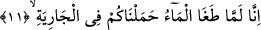

cezâ ile “yakalayıverdi.” Yâni her kavmi diğer kâfirlere vermiş olduğu cezâdan daha
şiddetli bir cezâ ile cezâlandırdı. Veya insanlar nezdinde bilinen cezâ mikdârının
üzerinde daha şiddetli bir cezâ ile cezâlandırdı. Çünkü onların işlemiş oldukları
günahlar, çirkinlikte diğer kâfirlerin günahlarından daha fazla idi. Nûh (a.s.)’ı
yalanlayan kâfirler suda boğuldular. Onlar, Nûh (a.s.) ile birlikte gemiye binenlerin
dışında kalan tüm yeryüzü halkı idi. Allah, Lût kavminin yaşadığı kasabaları
yeryüzünden söktükten sonra bu işle memur kıldığı melekleri vâsıtası ile o kasabaları
rüzgarın sırtına bindirdi. Sonra o bölgenin altını üstüne getirdi. Üzerlerine taş yağdırdı
ve o bölgeyi kötü kokulu, iğrenç bir suya batırdı. Bu öyle bir koku idi ki yeryüzünde bir
benzeri daha yoktu. Fir’avun’u ve askerlerini de Kızıldeniz veya Nil nehrinde boğdu.
İşte Allah’a karşı gelen her ümmet, işledikleri çirkin amelleri uyarınca cezâlandırılmış
ve yaptıkları amellere uygun karşılıkları bulmuşlardır.
Bu âyet Kureyş kâfirlerini korkutmakta ve Peygamber Efendimiz (s.a.)’i yalan
saymalarının kötü âkıbetine karşı onları uyarmaktadır. Öte yandan bu âyet-i kerîmede
akıl sâhiplerinin akıllarını başlarına getirecek ibretli nasîhatler vardır.
“Şiddetli bir şekilde” olarak tercüme edilen “râbiye” kelimesi, “bir şey arttı”
anlamına gelen “rebâ eş-şey’u-yerbu” fiilinden türemiştir. Nitekim fâize de, fâiz yiyenin
para verdiği kişiden verdiğine karşılık daha fazla almasından dolayı bu kelimeden
türeme olarak “ribâ” denmiştir.
11. Şüphesiz, su bastığı vakit sizi gemide biz taşıdık;
“Şüphesiz” Ey insanlar! Tufan esnâsında bilinen şekliyle kalmayıp “su bastığı vakit”
yâni normal sınırları aşıp kabardığında, her şeyin üzerini beş yüz arşın yükseklikte
kapladığında, bâzılarına göre dünyanın en yüksek dağını on beş arşın aştığında “sizi
gemide” yâni Nûh’un gemisinde “biz taşıdık.”
Biz yukarda bu âyeti tefsir ederken “tağâ: kabarma” fiilini “suyun normal sınırları
aşması” şeklinde tefsir etmiştik. Âyetin bu kısmına; “şüphesiz su kabardığında; yâni
kendisini tutmakla görevli olan melek ile ilişkilerinde sınırı aştığında ve artık melek
onu kontrol edemez hâle geldiğinde sizi gemide biz taşıdık” şeklinde anlam vermek
mümkündür. İşte suyun normal sınırları aşması veya kendini gözetleyen bekçiye isyan
etmesi, Nûh kavminin çeşit çeşit inkâr ve günahlarda ısrarlı olmalarından ve Allah’ın
Nûh (a.s.)’a vahyettiği hükümleri yalanlamada aşırı gitmelerinden dolayıdır. Bu
hükümlerin arasında kıyâmetin hâlleri de vardır. İşte bu küfür, inkâr ve yalanlamada
aşırıya kaçmaları nedeniyle Allah onlardan, kendilerini suda boğmak sûretiyle intikam
almıştır.
Âyette yer alan “hamelnâkum: sizi taşıdık” ifâdesinin anlamı; “sizler babalarınızın
sulbünde iken babalarınızı taşıdık” şeklindedir. Dolayısıyla sizler de ferd ferd o gemide
sanki taşınmış gibisiniz. Bu ifâdede, “taşıma” sâyesinde insanlara yapılan iyiliğe dikkat